滋賀大学 自主ゼミ「サウンドプログラミング入門」 2026年度 春学期
音楽制作に使用するDAW（Digital Audio Workstation）は、楽曲制作や音源の処理に特化したソフトウェアです。それらは録音した音素材をタイムライン上に並べたり、エフェクトをかけたり、ミックスをしたりといった作業を効率的に行えるよう設計されています。簡単に音楽を作れるようになっている一方で、ソフトの設計によってできることの自由度は限られます。
これに対し、サウンドプログラミングでは、音そのものを設計・生成することが可能です。波形を一から作り出したり、独自のシンセサイザーやエフェクト、自律的に演奏するシステムをゼロから構築したりすることができます。
| DAW | サウンドプログラミング | |
|---|---|---|
| 主な操作 | 音素材の収録・配置・編集 | 音そのものの設計・生成 |
| 自由度 | 既成操作や音源編集に限定される | 音響処理の構造を定義できる |
| 代表例 | GarageBand, Logic, Ableton Live | Pure Data, plugdata, Max/MSP, SuperCollider |
Pure Data（Pd） は、1996年に Miller Puckette によって公開されたサウンドプログラミング環境です。 Max（Max/MSP）という商用ソフトの兄弟分にあたり、Miller Puckette自身がMaxの開発者でもあります。白黒の簡素なGUIが特徴で、オープンソースかつ無料で利用できることから、世界中のアーティストや研究者に長く使われています。
plugdata は、その Pure Data の処理系をそのまま内包したソフトウェアです。2021年に JUCE というオーディオアプリケーション開発フレームワークを使用して開発が始まり、Pure Data の機能に加え、現代的で見やすいUIが追加されています。さらに、作成したパッチを VST / AU プラグイン として書き出し、DAWの中で楽器としてまたエフェクターとして利用することが可能です。
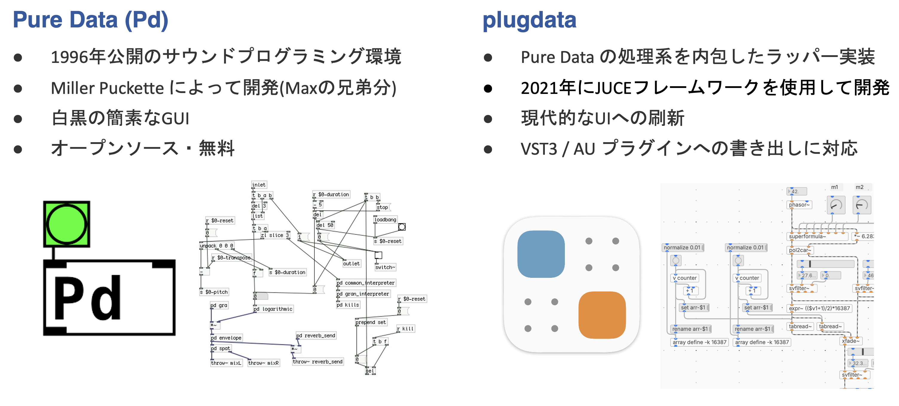
図1.2 Pure Dataとplugdataの比較
VST / AU とは、DAW上で使えるオーディオプラグインの規格のこと。VST（Virtual Studio Technology）はSteinberg社が開発した業界標準的な規格で、Windows / Macの多くのDAWで利用できる。AU（Audio Units）はApple社がmacOS向けに開発した規格で、Logic ProやGarageBandなどで使われる。
plugdataでのプログラミングは、PythonやC言語のようにテキストでコードを書くのではなく、「オブジェクト」と呼ばれる機能の箱を画面上に配置し、それらを「線（コネクション）」で繋いで情報の流れを作る、ビジュアルプログラミング（ノードベースプログラミング）という手法をとります。
例えばPythonで「440Hzのサイン波を音量0.5で鳴らす」処理を書くなら、
xxxxxxxxxxfreq = 440volume = 0.5play_sine(freq, volume)のように変数への代入と関数呼び出しを記述します。同じ処理をplugdataで作る場合は、[osc~ 440]（発振器）というオブジェクトに数値を渡し、[*~ 0.5]（乗算）を経由して [dac~]（出力）に繋ぐ、という具合に オブジェクト同士を線で繋いでプログラムを構築します。情報の流れを視覚的に捉えることで、複雑な音響処理の仕組みも直感的に理解しやすくなります。
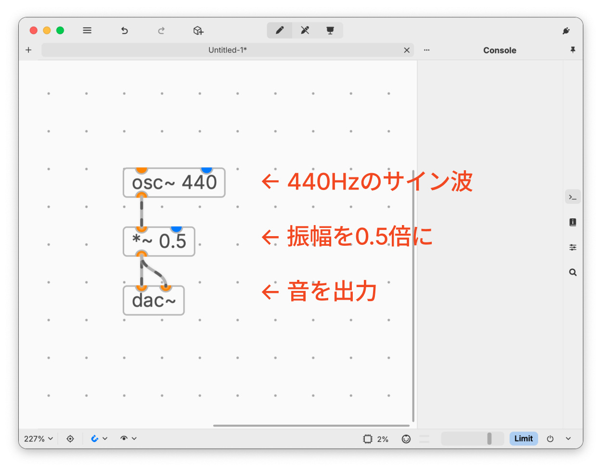
図1.3 plugdataのプログラム画面
plugdataは公式サイトから無料でダウンロードできます。
| 手順 | 内容 |
|---|---|
| ① ダウンロード | https://plugdata.org からインストーラを取得 |
| ② インストール | ご自身のOS用のファイルを実行 |
| ③ 起動 | アプリケーションから plugdata を開く |
参考サイト(fendoapさん note記事)：https://note.com/ysuie_o/n/n78c2fb6855b1
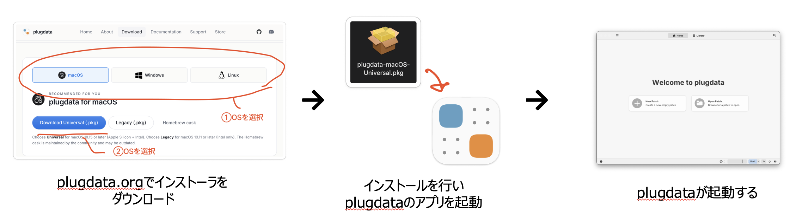
図2.1 インストールから起動まで
起動できたら、まず音の入出力まわりの設定を確認します。左上のメニューボタンを押し、表示されたメニューから「Settings...」を選択します。
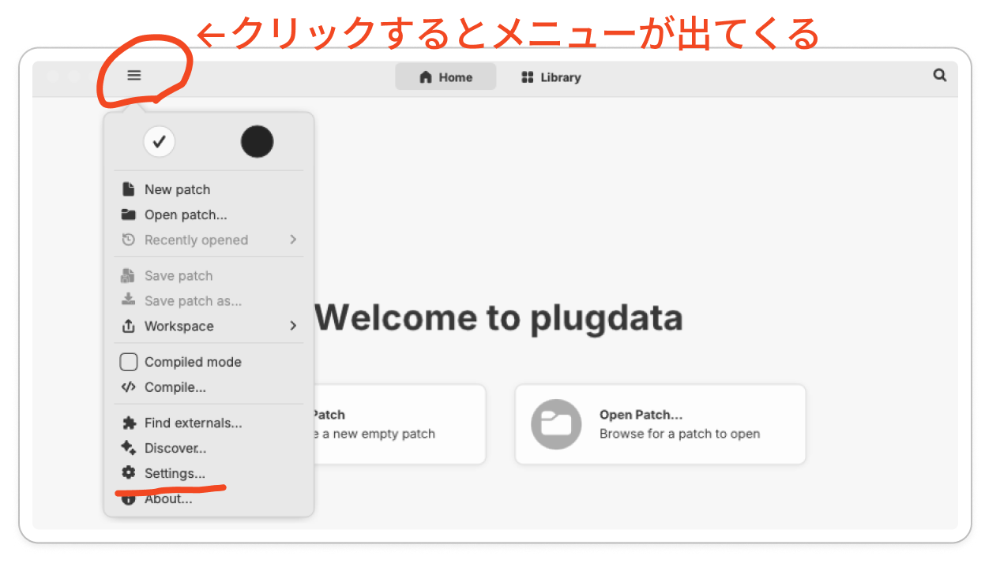
図2.2 メニュー → Setting... を開く
設定画面の Audio メニューを選ぶと、出力デバイスと入力デバイスを指定できます。
出力デバイス：内蔵スピーカーや有線のオーディオインターフェイスを選ぶ
入力デバイス：本講義ではマイクを使わないので、入力は Inactive にしておいてもよい
⚠️ Bluetoothイヤホンは使わないこと Bluetooth接続のイヤホンやヘッドホンを使うと、サンプリング周波数が下がって音質が劣化したり、処理が追いつかずにアプリが落ちたりする原因になります。有線のヘッドホンや内蔵スピーカーを使ってください。
もし plugdata が起動しない場合は、OS側の環境設定（システム設定）であらかじめ内蔵スピーカ・マイクを既定デバイスに指定しておくと改善することがあります。
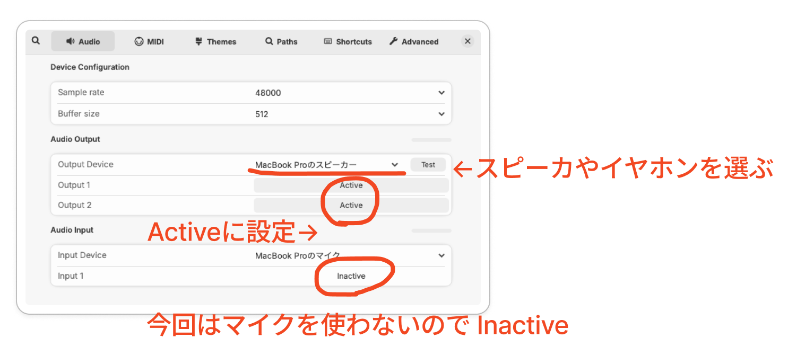
図2.3 入出力の設定
同じAudio設定画面で、Sample Rate と Buffer Size も設定できます。
Sample Rate（サンプリング周波数）：1秒間の音を何点のデータで表現するかの設定。扱える上限周波数（ナイキスト周波数 = サンプリング周波数の半分）に直接関係する。44100 Hz または 48000 Hz に設定するのが一般的。
Buffer Size（バッファサイズ）：オーディオ処理をまとめて行う単位（サンプル数）。小さいほど低遅延になるが、その分CPU負荷が増す。512 〜 1024 あたりが扱いやすい目安。
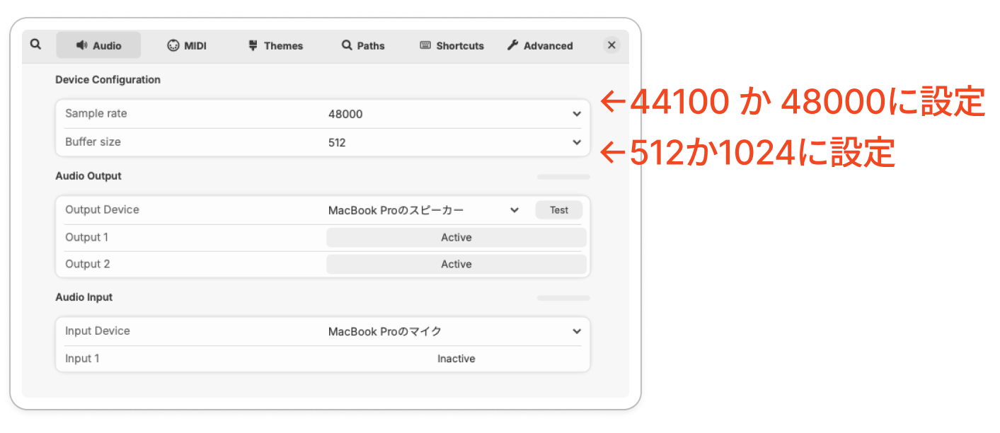
図2.4 サンプルレートとバッファサイズの設定
設定が済んだら、実際に作業をする「パッチ」を開きます。
| 手順 | 内容 |
|---|---|
| ① 新規パッチを作成 | スタート画面の New Patch をクリック（もしくは「メニュー → New patch」） |
| ② 確認 | 空のウィンドウが表示されれば完了 |
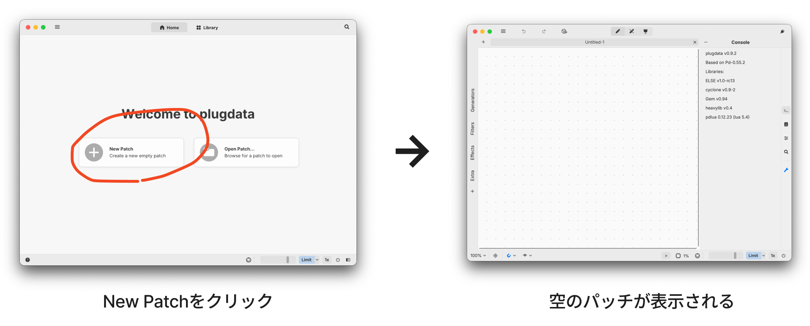
図3.1 新規パッチの作成
パッチウィンドウは大きく次の4つの要素から構成されています。
| 番号 | 名称 | 役割 |
|---|---|---|
| ① | パッチウィンドウ | オブジェクトの配置・配線を行うメインの作業領域 |
| ② | ツールバー | オブジェクトの追加、エディット/ランのモード切替、DSP操作などのボタンが並ぶ |
| ③ | コンソール / インスペクタ | エラーやプリント出力を表示する領域、オブジェクトの設定を行う領域（右のボタンで切り替え） |
| ④ | ボリューム / DSPボタン | ボリュームでバッチ全体の音量調整、DSPをオンにすると音の処理・再生 |
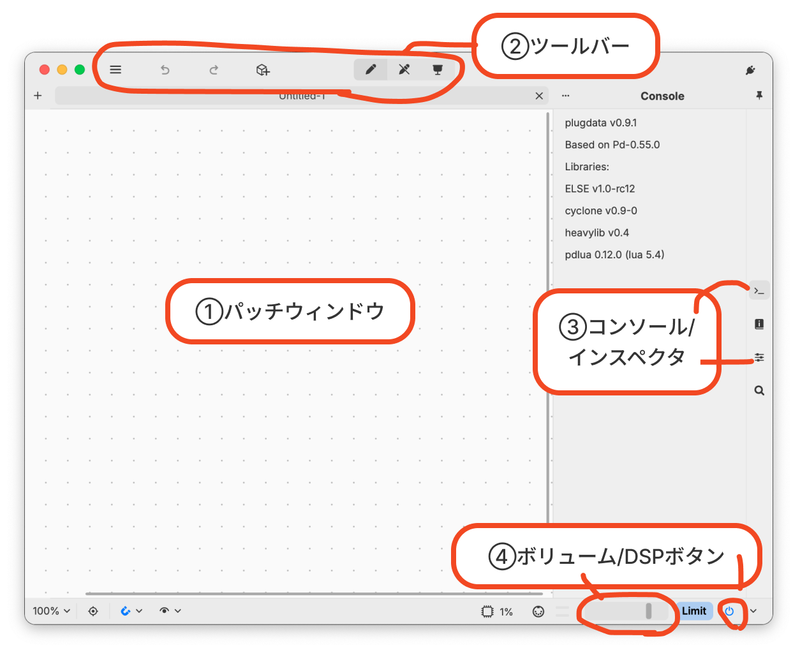
図3.2 画面の構成
plugdataには エディットモード と ランモード の2つの作業モードがあり、目的に応じて切り替えながら使います。
| エディットモード | ランモード | |
|---|---|---|
| 背景 | 点（ドットグリッド）が描画される | 白背景になる |
| 用途 | パッチを編集するモード | パッチを操作するモード |
| できること | オブジェクトの配置・配線 | ボタン・スライダー等のGUI操作 |
| 制限 | （Ctrl/Cmdを押しながらならGUIも一応操作可能） | オブジェクトの配置や配線は不可 |
切替方法：
ショートカット：Cmd + E（Mac） / Ctrl + E（Windows）
もしくは、ツールバー上部の ペンマーク をクリック
「編集中はエディットモード、音を鳴らすときはランモード」と覚えておけばOK。
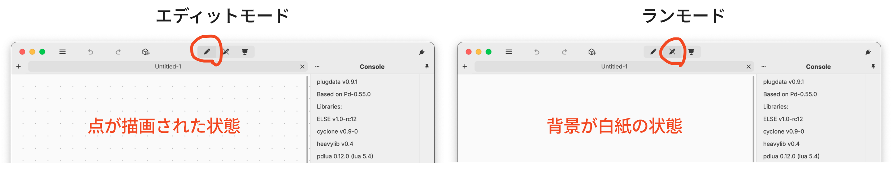
図3.3 エディットモード（編集）とランモード（実行）
ここからは、実際にplugdataで使うオブジェクトの種類を一通り見ていきます。plugdataで作るプログラムは、結局のところ「どんなオブジェクトを置き、それをどう繋ぐか」がすべてです。まずはどんな部品が用意されているのかを把握してから、それらを組み合わせて音を鳴らすプログラムを作っていきましょう。
plugdataのオブジェクトは、扱う信号の種類によって大きく2つに分かれます。
| 制御信号（メッセージ） | オーディオ信号（シグナル） | |
|---|---|---|
| 性質 | 離散・イベント駆動 | 連続・サンプル単位の処理 |
| 動作タイミング | イベントが発生した瞬間のみ値を送信 | サンプリング周波数で常時計算され続ける |
| 扱うデータ | 数値・メッセージ・bang など | 波形（連続値） |
| 代表的なオブジェクト | [number]、[+]、[-]、[*]、[/] など | [osc~]、[*~]、[out~] など |
| GUI | 数値を扱うGUIが多く用意されている | （主に内部処理用） |
🔑 重要な目印 オブジェクト名の末尾に付いている「~（チルダ）」が、そのオブジェクトがオーディオ信号を扱うかどうかの目印になります。
[osc~]のようにチルダが付いているものはオーディオ信号、[osc]のように付いていないものは制御信号、と区別してください。
plugdataでは、エディットモード中に Cmd/Ctrl + 1 〜 5 のショートカットで、よく使う5種類のオブジェクトを素早く配置できます。これらが plugdataで扱う基本部品 です。
| ショートカット | 種類 | 役割 |
|---|---|---|
| Cmd/Ctrl + 1 | オブジェクトボックス | 任意のオブジェクト名を入力して配置（osc~ 440 など） |
| Cmd/Ctrl + 2 | メッセージボックス | 数値やメッセージを格納し、クリックで送信 |
| Cmd/Ctrl + 3 | floatボックス（数値ボックス） | 数値の表示・入力、値の流れの確認 |
| Cmd/Ctrl + 4 | シンボルボックス | 文字列（シンボル）の表示・入力 |
| Cmd/Ctrl + 5 | コメント | パッチに説明文を書き込む（処理には影響しない） |
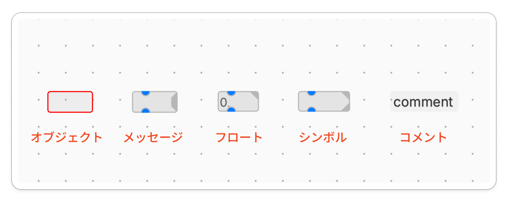
図4.2 ショートカットで配置できる5種類のオブジェクト
最もよく使う、汎用のオブジェクト です。空のボックスに オブジェクト名と引数 を入力することで、サイン波の発振器や演算、フィルターなど、ありとあらゆる機能を呼び出せます。これから紹介する [osc~] [*~] [out~] などはすべてこのオブジェクトボックスで作られます。
数値や文字列を格納しておき、クリックすると右隣のオブジェクトへ送信 するものです。例えば [440( というメッセージボックスを [osc~] に繋いでクリックすると、[osc~] の周波数が440Hzに変わります。
💡 メッセージボックスは、見た目が「右側がへこんだ箱」になっているのが特徴です。
[440(のように表記で表すこともあります。
数値（float型）を表示・入力するためのボックスです。ダブルクリックで数値を直接入力 したり、マウスドラッグで値を変更 することもできます。値の流れを目で確認したり、簡易的なパラメータ入力UIとして使えます。
文字列（シンボル）を表示・入力するためのボックスです。ファイル名や送信先の名前など、文字列を扱う場面で使います。floatボックスの文字列版、と理解すれば十分です。
プログラム自体には影響しない、説明文を書き込むためのテキスト です。「このブロックはエンベロープ」「ここで周波数を制御」など、後から自分や他人がパッチを読み返すときの目印として使います。コードでいうコメント文と同じ役割です。
ショートカットの5種類以外にも、plugdataにはマウスで操作できる GUIオブジェクト が多数用意されています。これらは Cmd/Ctrl + 1 でオブジェクトボックスを開き、名前を入力して配置します。
| オブジェクト名 | 役割 | ショートカット |
|---|---|---|
[bang] / [bng] | クリックで一瞬の「合図」（bang）を発生させるボタン | Shift + Cmd/Ctrl + B |
[toggle] / [tgl] | クリックで ON/OFF（1/0）を切り替えるチェックボックス | Shift + Cmd/Ctrl + T |
[hslider] / [hsl] | 横方向のスライダー | Shift + Cmd/Ctrl + J |
[vslider] / [vsl] | 縦方向のスライダー | Shift + Cmd/Ctrl + V |
[knob] | 時計回りに回す回転ノブ | （割当なし） |
[hradio] | 横方向のラジオボタン（複数の中から1つ選ぶ） | Shift + Cmd/Ctrl + I |
[vradio] | 縦方向のラジオボタン（複数の中から1つ選ぶ） | Shift + Cmd/Ctrl + D |
[nbx] | 数値ボックス（拡張版、ドラッグで値変更） | Shift + Cmd/Ctrl + N |
[canvas] / [cnv] | 装飾用のカラフルな矩形（背景・グルーピング用） | Shift + Cmd/Ctrl + C |
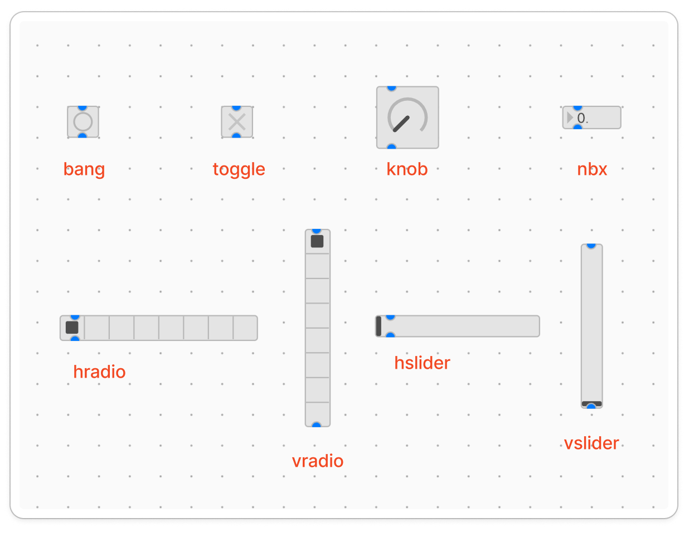
図4.3 plugdataの主なUIオブジェクト
これらのGUIオブジェクトは、後の節で実際にパッチに組み込んでいきます。今は 「こういう部品が用意されている」 ということだけ把握しておけばOKです。
実際にオブジェクトを配置してみます。ここでは Cmd/Ctrl + 1 を例に、サイン波を生成する [osc~ 440] を作ってみましょう。
エディットモードに切り替える（Cmd/Ctrl + E もしくはペンマーク）
Cmd/Ctrl + 1 で空のオブジェクトボックスを表示する
オブジェクト名と引数を入力する（例：osc~ 440）
Enter または ボックス外をクリックして確定する
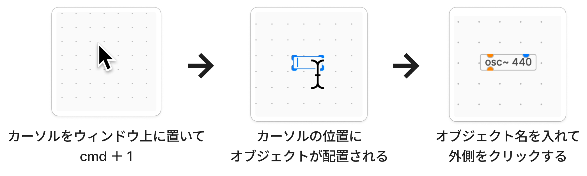
図4.4 オブジェクトの作成とオブジェクト名・引数の指定
plugdataにはあらかじめさまざまな機能のオブジェクトが用意されており、オブジェクト名を指定することで利用できます。
オブジェクト名の後ろには、そのオブジェクトに対応した 引数（arguments） を半角スペース区切りで指定できます。これは関数の初期引数のようなもので、例えば [osc~] の引数は「周波数(Hz)」を意味します。
[osc~ 440] → 440Hzのサイン波を出力する発振器
[osc~ 880] → 880Hzのサイン波を出力する発振器
引数を省略して [osc~] とだけ書くと、初期値（多くは0）で生成されます。
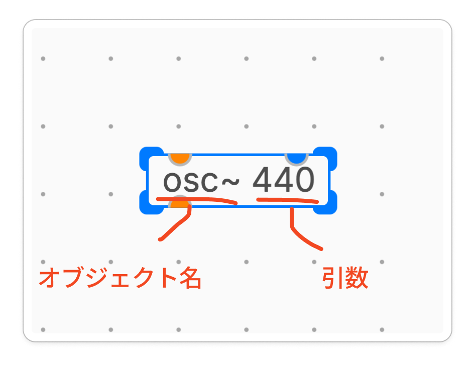
図4.5 オブジェクト名と引数
オブジェクトには情報の入出力口があります。
インレット（入力）：オブジェクトの 上部 にある小さな端子。情報を受け取る。
アウトレット（出力）：オブジェクトの 下部 にある小さな端子。処理した情報を送り出す。
入出力は色で2種類に区別されます。
| 色 | 種類 | 内容 |
|---|---|---|
| オレンジ | シグナル（signal） | 波形などの連続値（オーディオ信号） |
| 青 | メッセージ（message） | 数値・シンボル・リストなどの離散的な値やイベント |
[osc~ 440] の場合、上部のインレットでは周波数の制御値を受け取り、下部のアウトレットからはサイン波がオレンジ（シグナル）として出力されます。
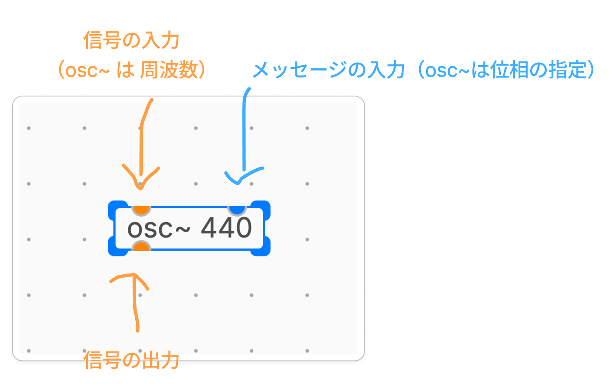
図4.6 インレットとアウトレット
ここまでで紹介してきたオブジェクトを使って、実際に 440Hzのサイン波を鳴らすパッチ を組み立てていきます。これから作るのは次のような流れのプログラムです。
xxxxxxxxxx[osc~ 440] → 440Hzのサイン波を生成↓[*~ 0.5] → 振幅を 0.5 倍にして音量を調整↓[out~] → スピーカーへ出力
「サイン波 → 振幅の調整 → 出力」という最小構成です。
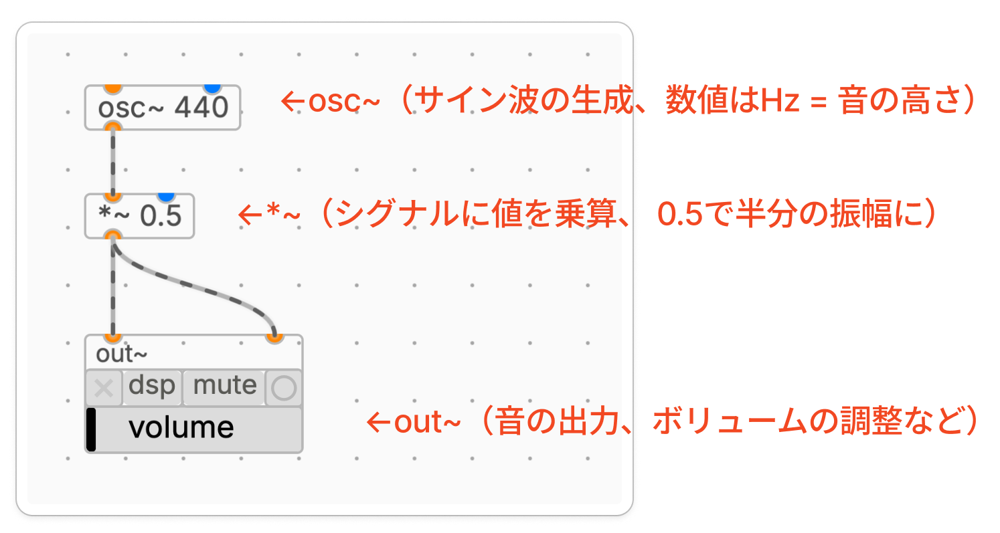
図4.7 サイン波を鳴らすシンプルなプログラム
[*~ 0.5] を配置して [osc~ 440] と繋ぐ[*~ ] は 入力信号の振幅に引数の値を乗算する オブジェクトで、引数で音量を決められます。
[*~ 1] → 1倍（原音）
[*~ 0.5] → 0.5倍（音量半分）
[*~ 0] → 0倍（無音）
配線の手順：
[osc~ 440] の アウトレット（下の端子）をクリックする
そのまま [*~ 0.5] の 左インレット（上の端子）の上でクリックすると、線で繋がる
線を消したい場合は、線をクリックして選択 → Deleteキー で削除できる
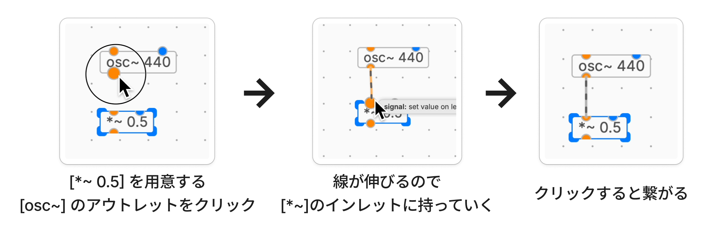
図4.7.1 osc~ → *~ を繋ぐ（振幅・音量を0.5倍にする）
補足：オブジェクト選択状態だと自動で繋いでくれる
[osc~ 440]を選択した状態で Cmd/Ctrl + 1 →*~ 0.5と入力すると、新しく作るオブジェクトを自動で繋いだ状態で配置してくれます。慣れてくるとこちらの方がスムーズです。
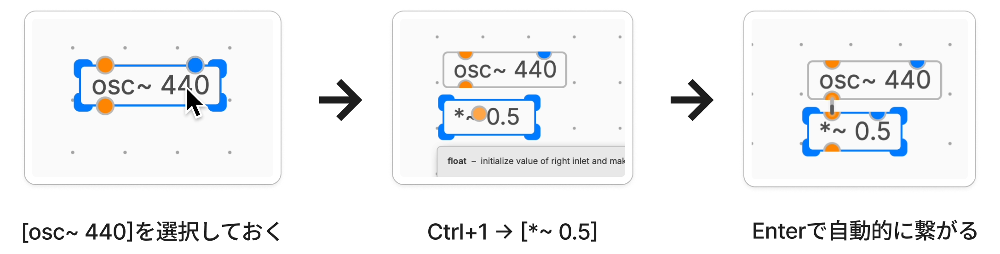
図4.7.2 オブジェクト選択状態で自動接続
[out~] を追加する音をスピーカーへ送るには、出力用のオブジェクト [out~] が必要です。これは ステレオ出力用 のオブジェクトで、左右2つのインレットを持っています。
エディットモードで Cmd/Ctrl + 1 → out~ と入力して配置します。配置すると、DSPボタン・muteボタン・音量フェーダーがセットになったUIが現れます。
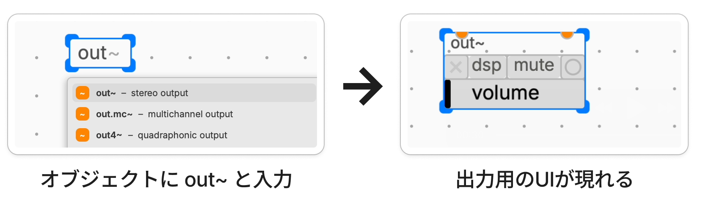
図4.7.3 [out~] を作って出力の準備
[*~] と [out~] を繋ぐ[out~] の 左インレット = 左チャンネル、右インレット = 右チャンネル に対応しています。
[*~ 0.5] のアウトレットから、[out~] の 左右両方のインレット にそれぞれ配線することで、左右同じ音が出る ステレオ出力 になります。
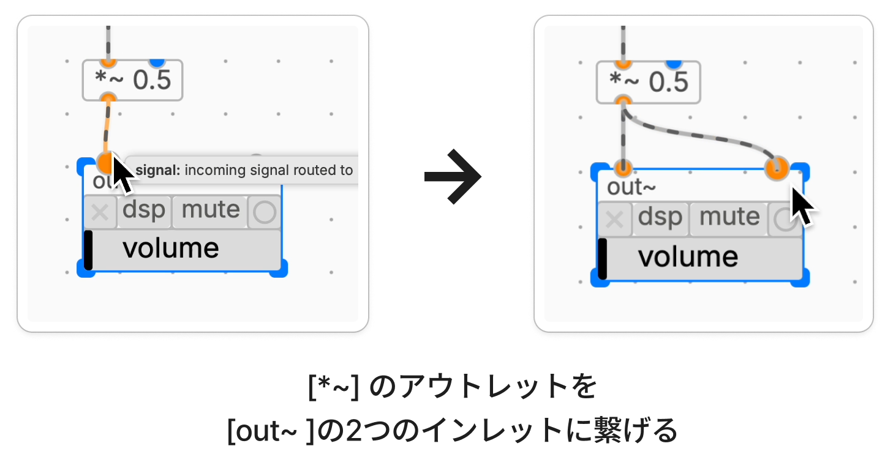
図4.7.4 [*~]を[out~]に繋げて出力
ここまでで配線は完成です。実際に音を出して確認します。
Cmd/Ctrl + E でランモードに切り替える（もしくはペンマークをクリック）
[out~] の 「DSP」ボタンをON にする（ウィンドウ下部のDSPボタンでも可）
[out~] の フェーダー を動かして音量を調整すると、サイン波が聴こえる
⚠️ いきなり大きな音が出ないよう、フェーダーは 下げた状態から徐々に上げて ください。特にヘッドホン使用時は要注意。
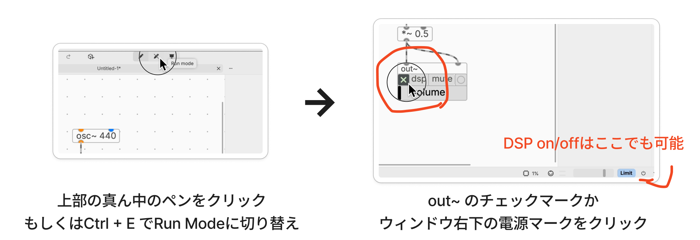
図4.8 ランモードにしてDSPをオンにする
ここまでは引数で固定値（440Hzや0.5倍）を指定しましたが、実際には 演奏中に値を変えたい ことが多いです。前節で紹介したGUIオブジェクトを使うと、マウスで値を動かしながら音を変化させられます。
float ボックスは数値を格納し、ダブルクリックで値を変更できるGUIオブジェクトです。
Cmd/Ctrl + 3 で float ボックスを配置
ダブルクリックで数値を入力（例：880）
[osc~ 440] の 左インレット に接続すると、値を変えるたびに osc~ の周波数を変更できる
引数で書いた 440 は初期値であり、インレットに値を流し込めば実行中に上書きできる という点が重要です。
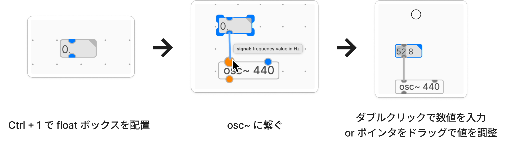
図5.1 floatボックスで周波数を調整
数値を急激に変えると「ブツッ」という不快なノイズが発生することがあります。これは、デジタル信号が階段状に不連続に変化することで生じる現象で、ジッパーノイズ（zipper noise）と呼ばれます。
これを防ぐために [f2s~] オブジェクトを用います。
f2s~ = float to signal の略
入力された 離散的な数値（メッセージ／float） を、引数で指定した時間（ミリ秒, ms）をかけて 滑らかに補間しながら オーディオ信号（signal）に変換する
似たオブジェクトに [sig~] もあるが、こちらは即座に変換するだけで補間機能はない。音量や周波数の滑らかな制御には [f2s~] の方が適している
例：[f2s~ 10] → 10ミリ秒かけて値を滑らかに変化させる
xxxxxxxxxx[221( ← float ボックスで221を送信↓[f2s~ 10] ← 10msかけて滑らかに変化↓[osc~ 440] ← 周波数として受け取る
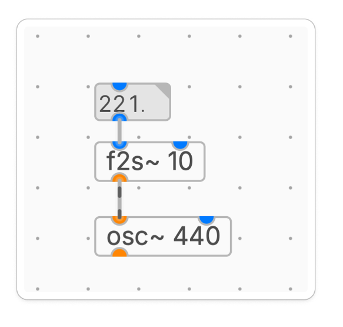
図5.2 f2s~ を挟んで離散値を連続値に
4.3節で紹介した [hslider] を使って、実際に [osc~] の周波数を連続的に制御してみます。
スライダーやノブなどのGUIは、デフォルトの値の範囲が 0〜127（MIDIの値域）になっています。値の範囲は Inspector で自由に変更でき、周波数・音量・定位（パンニング）など、さまざまなパラメータに対応させることができます。
手順：
エディットモードで Cmd/Ctrl + 1 → hsl（または hslider）と入力して配置
スライダーをクリックして選択 → 右クリックで「Properties」を選ぶと、画面右側に Inspector が表示される
Inspectorで Min: 220, Max: 880 に設定（範囲を変更）
スライダーのアウトレットを [osc~] の左インレットへ接続（必要に応じて間に [f2s~ 10] を挟む）
ランモードに切り替えてスライダーを動かすと、220〜880Hz の範囲で周波数が変化する
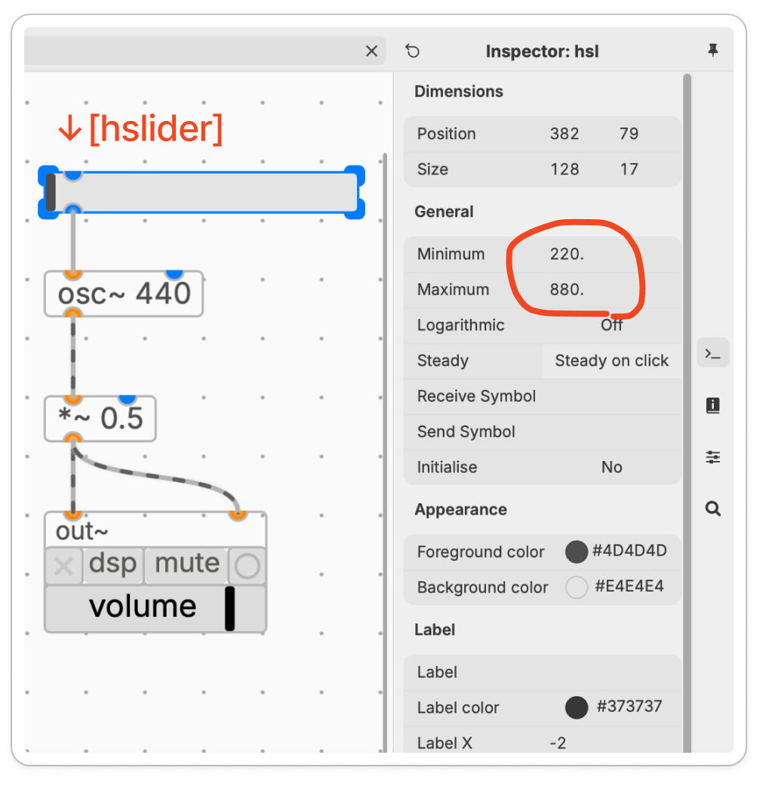
図5.3 [hslider]で[osc~]の周波数を調整
[*~ 0.5] のように引数で固定の値を掛けるだけでなく、フェーダーで音量を変えたい 場合は [gain~] オブジェクトが便利です。
gain~ の配置手順：
エディットモードであることを確認
Cmd/Ctrl + 1 でオブジェクトボックスを表示
gain~ と入力
Enter または ボックス外をクリックして確定
縦長のボリュームフェーダーUIが配置される
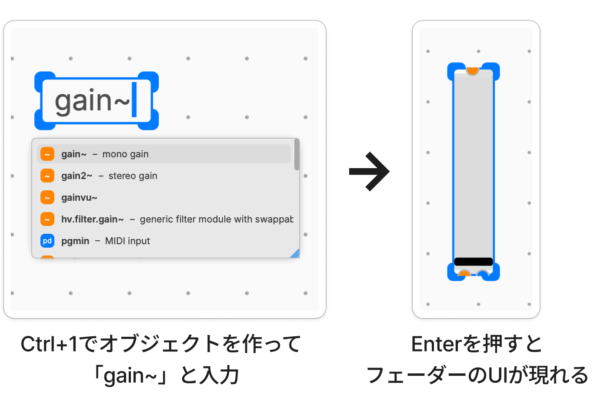
図5.4 [gain~]を配置、音量調整のGUI
[gain~] は内部に乗算（*~）と滑らかな補間を含み、フェーダーUIで直感的に音量を調整できるオブジェクトです。これまでのパッチの [*~ 0.5] を [gain~] に置き換えると、より自然で扱いやすい音量制御になります。
最終的なパッチの形：
xxxxxxxxxx[osc~ 440] ← サイン波の生成（数値はHz＝音の高さ）↓[gain~] ← 音量を調整するGUI↓[out~] ← 出力（ステレオ）
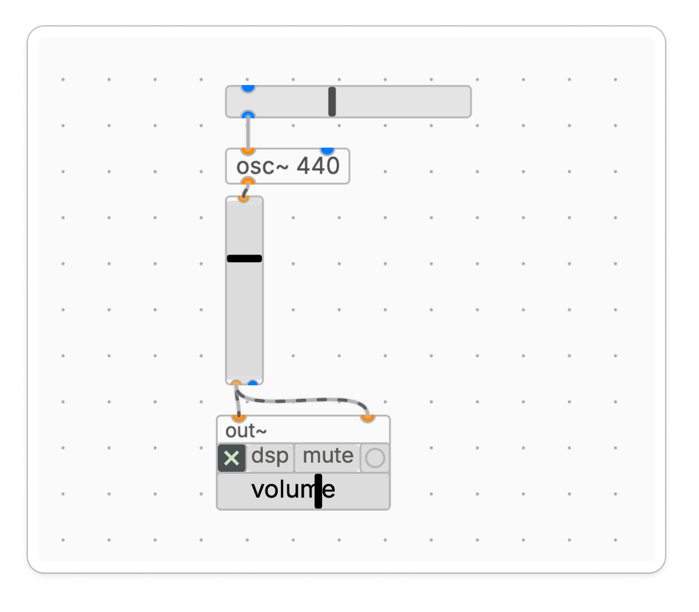
図5.5 GUIを含んだパッチ
完成したパッチは、ファイルとして保存 しておきましょう。せっかく作ったパッチも、plugdataを終了すると消えてしまいます。保存しておけば、次回以降の授業で続きから作業を再開したり、過去のパッチを参考にしたりできます。
「メニューから File → Save as... 」またはショートカットで「Cmd/Ctrl + Shift + S」で保存ができます。
| 手順 | 内容 |
|---|---|
| ① | メニュー → File → Save As... |
| ② | 保存場所を選ぶ |
| ③ | ファイル名を入力 |
| ④ | 保存 |
一度保存した後は、Cmd/Ctrl + S(File → Save)で上書き保存できます。
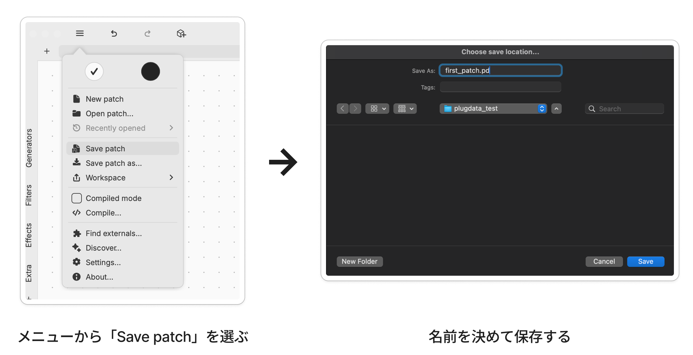
図6.1 パッチの保存(File → Save As)
DAWとサウンドプログラミングの違いと、plugdata の位置付け
ビジュアルプログラミングの考え方（オブジェクトとコネクション）
plugdataの起動・設定（オーディオデバイス、サンプルレート）
画面構成と、エディットモード／ランモードの切り替え
制御信号（青）とオーディオ信号（オレンジ）、~ の意味
ショートカット Cmd/Ctrl + 1〜5 で配置できる5種類の基本オブジェクト
[bang] [toggle] [hslider] [knob] などのUIオブジェクト
[osc~]、[*~]、[out~] を使った最小構成のサイン波パッチ
[f2s~] によるジッパーノイズの抑制
スライダーや [gain~] によるパラメータの動的制御
パッチの保存方法
波形とエンベロープについて